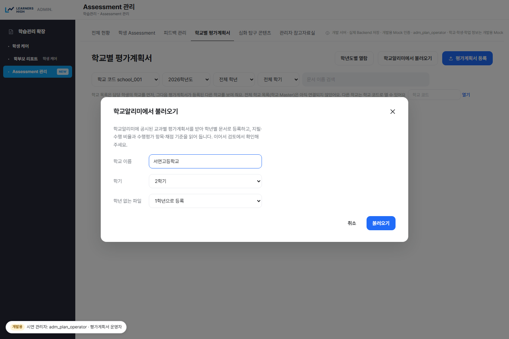
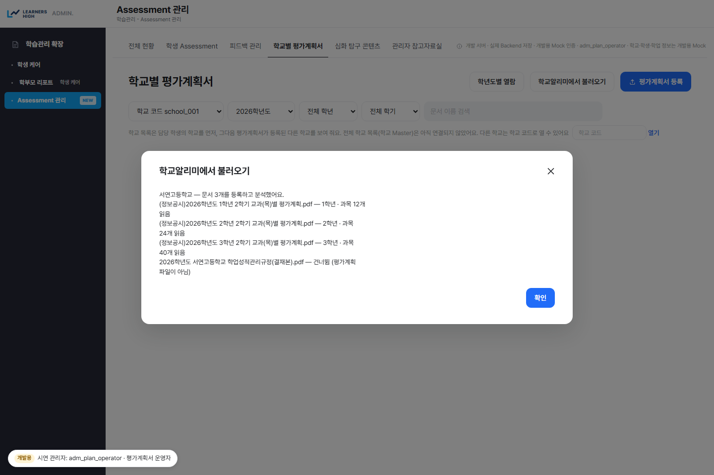
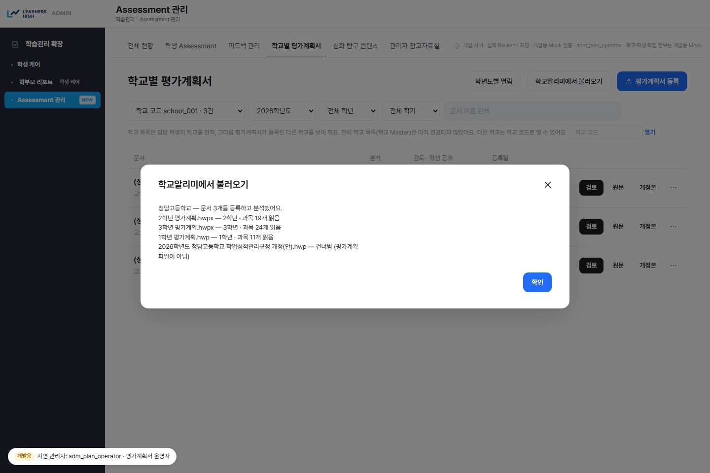
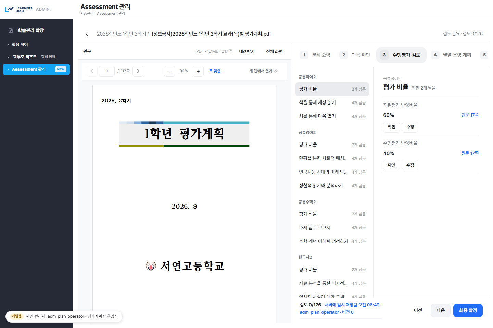
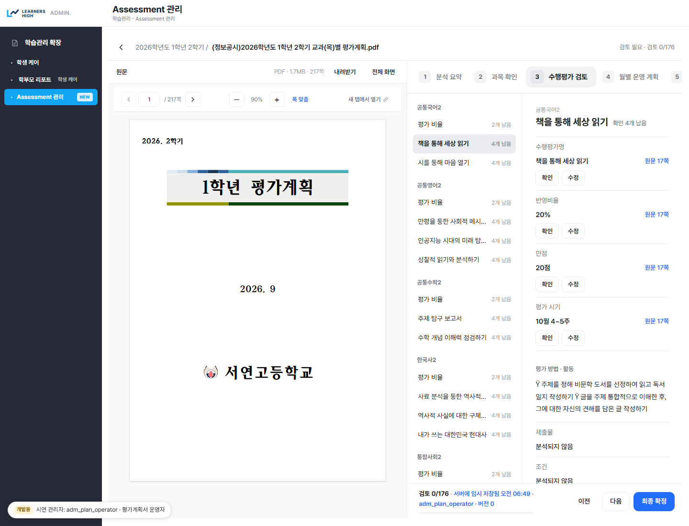
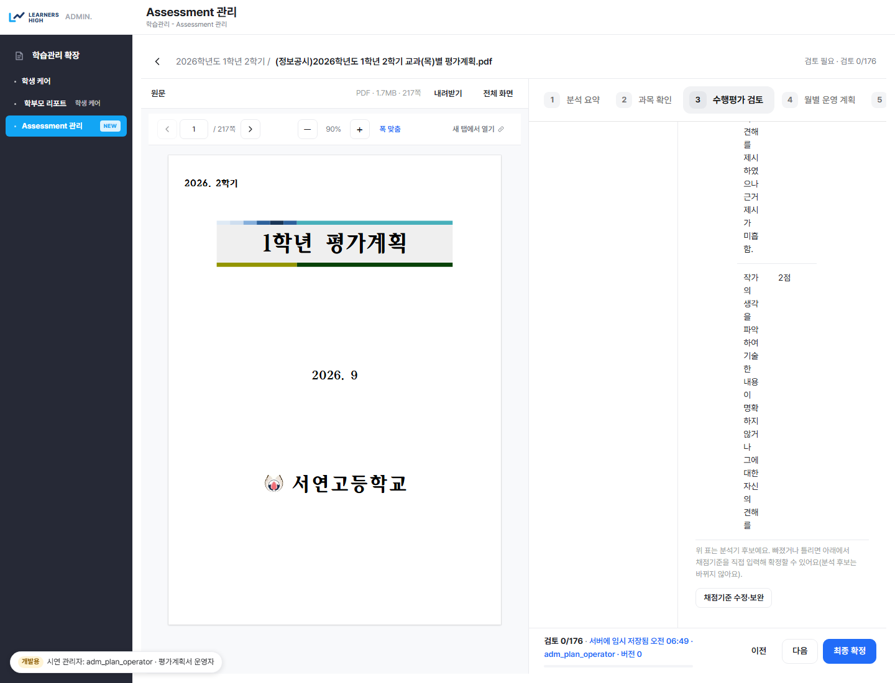

평가계획서 분석 — 실제 백엔드·관리자 화면 적용
2026-11-18 · PR #17(수연님) 위에 쌓은 #18 · 실측: Playwright, 학교알리미 공개 원문
핵심
- 평가계획서 분석을 외부 분석기(Railway) 대신 백엔드 안에서 한다. 원문이 서버 밖으로 나가지 않고, 토큰·외부 서비스가 필요 없다.
- 관리자가 학교 이름만 넣으면 학교알리미에서 평가계획서를 받아 학년별로 등록하고 바로 분석한다.
- 과목·지필/수행 비율·수행 항목에 더해 항목별 채점 기준(요소·배점·점수별 기준)을 읽어 수연님 검토 화면에 그대로 띄운다. 화면 코드는 버튼 하나만 더했다.
- 같은 공개 PDF로 비교하면 Railway 분석기는 비율 4과목·채점 기준 0건, 이 분석은 비율 98과목·채점 기준 69건이다. 정기시험 회차·월별 운영 계획(진도표)도 이제 읽는다(Railway 18회차·1,317행, 이 분석 54회차·1,329행).
1. 실제 화면 (Playwright로 조작)






2. 정확도·속도 (받아 둔 학교 113곳 전체)
Java로 옮긴 백엔드 분석과, 그동안 측정한 Python 추출기 결과를 같은 원문으로 비교했다.
| 항목 | 백엔드(Java) | Python | 비율 |
|---|---|---|---|
| 값 있는 과목 | 5,045 | 4,794 | 105% |
| 검증 통과 과목 (항목 비율 합 = 수행 비율) | 4,087 | 4,001 | 102% |
| 수행 항목 | 13,175 | 12,148 | 108% |
| 채점 기준이 붙은 항목 | 7,487 | 7,202 | 104% |
| 채점 요소 만점 합 = 과제 만점 | 7,167 | 6,845 | 105% |
| 정기시험 회차 (과목 수) | 2,704 (1,643) | — | |
| 월별 운영 계획 행 (과목 수) | 71,303 (3,864) | — |
학교 하나(평가계획 파일 전부) 처리 시간: 중앙 2.7초, 상위 10% 12.5초, 최대 36.7초(회차·진도표 포함). 원문 표본 대조(Python 기준 측정): 비율·항목 값 100건 중 95~99건 일치, 채점 기준 합 일치 95%.
알려진 차이: 선부고는 파일 단독으로 돌리면 56과목이 나오지만 113곳을 한 번에 돌린 측정에서는 파일 오류 1건(메모리)이 났다. 창의·청명·성덕고 등 몇 곳은 Python보다 검증 통과 과목이 적다(과목명 이어받기 규칙 차이).
3. 수연님 분석기(Railway)와 같은 파일 비교
학교알리미 공개 PDF 14개(학교당 1개, 120쪽 이하)를 두 분석기에 같은 계약(0.3)으로 보냈다.
| 항목 (14개 합계) | Railway | 이 분석 |
|---|---|---|
| 지필·수행 비율이 있는 과목 | 4 | 98 |
| 수행 항목 / 비율 있는 항목 | 28 / 3 | 189 / 179 |
| 채점 기준이 붙은 항목 | 0 | 69 |
| 정기시험 회차(writtenEvaluation.exams) | 18 | 54 |
| 월별 운영 계획 행(teachingPlan) / 과목 | 1,317 / 113 | 1,329 / 106 |
| 처리 시간 중앙값 | 3.5초 | 1.5~3.8초 |
회차·운영 계획 두 줄은 백엔드(Java) 판, 나머지 줄은 Python 판(같은 규칙). 회차는 회차 비율 합이 지필 비율과 맞을 때만 낸다. Python 판은 도형이 매우 많은 쪽에서 표 찾기가 느려 113쪽 문서 하나가 260초 걸렸다. 백엔드(Java) 판은 같은 문서를 포함한 113곳 측정에서 학교당 최대 37초였다.
4. 바꾼 것
| 곳 | 내용 |
|---|---|
| 백엔드 분석 | assessment.analyzer.mode = local(기본) · http(예전 외부 분석기) · none. local은 PDF(PDFBox 선 읽기)·HWP/HWPX(기존 구조 리더) 표를 읽어 규칙으로 분석하고 기존 수신 계약(analysis-import 0.3) 모양으로 넘긴다. 이후 검증·저장·검토·확정은 그대로. |
| 학교 이름 불러오기 | POST /api/admin/assessment/evaluation-plans/import-from-schoolinfo — 학교알리미 받기 → 학년별 등록 → 분석. API 계약 §38-11에 적음. |
| 관리자 화면 | 평가계획서 목록에 "학교알리미에서 불러오기" 버튼·대화상자. |
| 시험 | 백엔드 단위 시험 전부 통과(기존 시험은 mode=none·http로 그대로 유지), 관리자 타입 검사·lint 통과. |
5. 수연님 로직 간소화 의견 (의견만, 아직 바꾸지 않음)
- 외부 분석기 경계 걷어내기: 분석이 백엔드 안으로 들어왔으니 HTTP 분석기 Client·토큰(공개 저장소에 노출된 상태)·분석기 프로필 두 벌(0.2/0.3) 검사를 없앨 수 있다. 시험이 이 경계에 묶여 있어(Stub 분석기 E2E) 시험부터 local로 옮겨야 한다.
- 계약 한 벌로: 0.2와 0.3을 함께 받는 파서·검증기·상태 판정이 분기마다 갈린다. 0.3 하나로 줄이면 수신·검증 코드가 크게 준다.
- 초안 저장 단순화: 검토 초안(버전·이벤트·충돌 409)과 확정값(필드 경로별 행)이 따로 있다. 관리자 한 명이 한 문서를 검토하는 실제 사용에서는 '초안 JSON 한 덩어리 저장 → 확정'으로 충분할 수 있다(동시 편집 요구 확인 필요).
- 빼면 안 되는 것: 월별 운영 계획(진도표)·정기시험 회차는 학생 월간 달력·확정 계획 화면이 쓴다. 이 분석도 이제 읽으므로 외부 분석기를 걷어내도 빠지지 않는다.
6. 남은 일
- 스캔본 OCR은 백엔드로 옮기지 않았다(스캔본은 126곳 중 2~3곳). 필요하면 Tesseract 연결.
- 113곳 일괄 측정의 파일 오류 2건(선부고 등) 원인 확인.